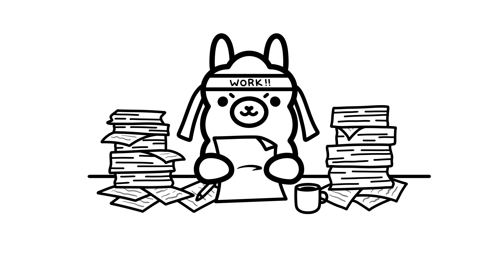

Recursos
Videos, herramientas y referencias para seguir aprendiendo.

Desde su elección y configuración hasta su uso en herramientas de desarrollo como VSCode, Cursor o Claude Code.
Ver recurso →Documentación oficial de Ollama con instrucciones detalladas y ejemplos prácticos.
Ver recurso →Repositorio con instrucciones de instalación y ejecución con Ollama.
Ver recurso →Aprende a crear un sistema de recuperación de información (RAG) privado utilizando Llama 3, Ollama y PostgreSQL con pgvector.
Ver recurso →Descubre consejos y trucos para maximizar el rendimiento de Ollama en tu entorno de desarrollo.
Ver recurso →Repositorio con todos los materiales y ejemplos de la masterclass.
Ver recurso →Ficha de Criterio Ético - IA Local
Riesgos, limitaciones y responsabilidades del uso de modelos de lenguaje en entornos locales.
Los modelos fueron entrenados sobre corpus masivos de internet que contienen sesgos culturales, de género e ideológicos. El modelo puede reproducirlos o amplificarlos sin que el usuario lo note.
El modelo genera texto con alta confianza aunque sea incorrecto: fechas, cifras, referencias y código pueden ser plausibles pero falsos. Todo resultado crítico debe ser verificado por el usuario.
La ejecución local protege los datos de terceros externos, pero no garantiza privacidad absoluta. Los logs, el historial y los archivos de caché locales pueden exponer información sensible si el equipo no está securizado.
Correr modelos de calidad requiere al menos 8–16 GB de RAM/VRAM. Esto crea una barrera de acceso que excluye a usuarios con hardware de gama baja, generando una desigualdad en quién puede beneficiarse de la herramienta.
A diferencia de servicios cloud, los modelos locales no tienen moderación de contenido centralizada. El usuario asume plena responsabilidad sobre su uso: puede generar desinformación o contenido dañino si no se aplica criterio ético.
El modelo tiene una fecha de corte de entrenamiento y no accede a internet. No conoce eventos recientes. Usarlo como fuente de información actual sin advertencia puede inducir a errores en quien lo consulte.
Errores comunes - Troubleshooting
Si algo falla durante la instalación o la demo, revisa aquí antes de entrar en pánico.